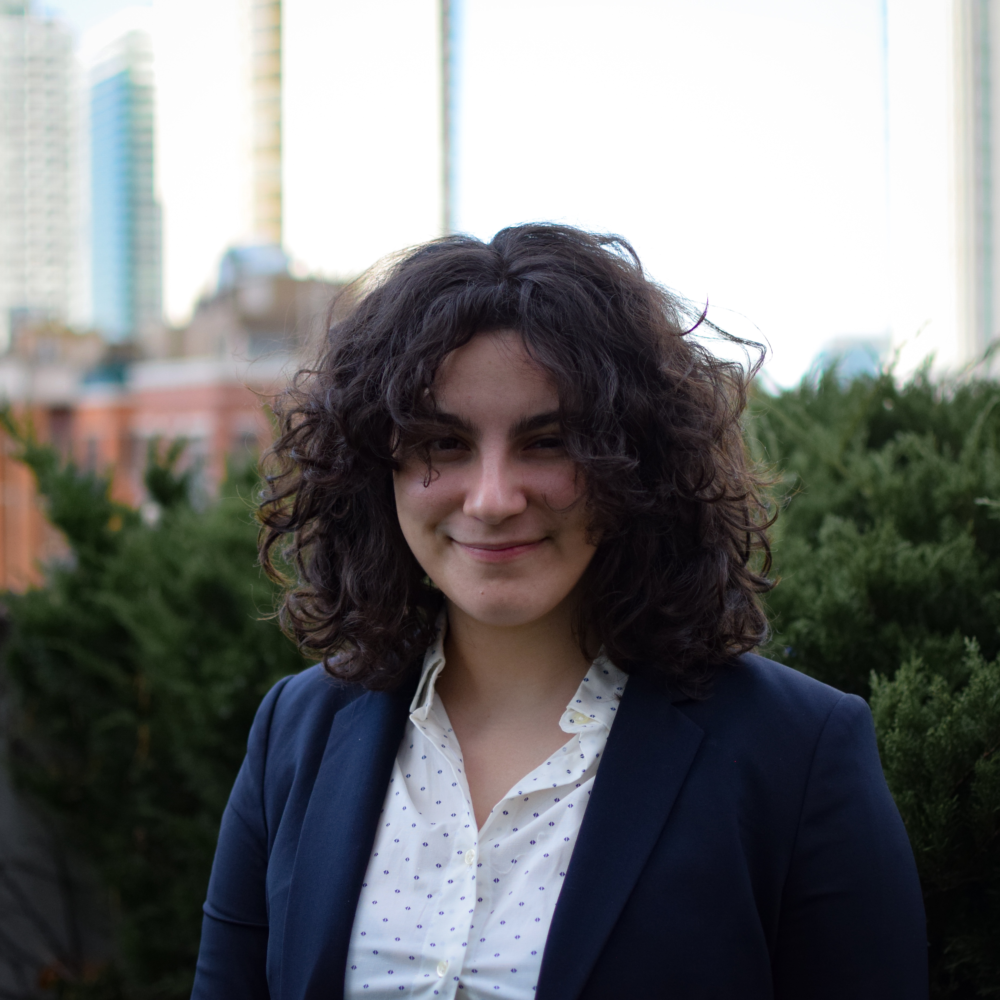

Welcome! I am a fifth-year Ph.D. candidate at the Kenneth C. Griffin Department of Economics at the University of Chicago.
My research focsues on industrial organization, retail, and commercial real estate.
Between 2017 and 2019, I was a research assistant in macroeconomics at the Federal Reserve Bank of New York. Before that, I studied economics, physics, and minored in mathematics at the University of Pennsylvania.
Buck Wild: The Impact of the Dollar Store on Households and Local Retail Competition
Presented at: Food Access at Dollar Stores (FADS) Workshop (2022), Urban Economic Association European Meeting (2023)
Scalable Production of Molybdenum Disulfide Based Biosensors C. H. Naylor, N. J. Kybert, C. Schneier,J. Xi, G. Romero, J. G. Saven, R. Liu, and A. T. C. Johnson ACS Nano 2016 10 (6), 6173-6179.
Math Camp Lecturer (Ph.D., MA). Summer 2022.
Industrial Organization (Undergraduate) -- TA for Michael Dinerstein. Spring 2022 and 2024.
Labor Economics (Ph.D.) -- TA for Thibaut Lamadon. Fall 2021.
Econometrics (Undergraduate) -- TA for Oscar Volpe. Fall 2021.
Classical Mechanics (Undergraduate) -- TA for Bill Ashmanskas. Fall 2015.
You can email me at cschneier AT uchicago DOT edu.